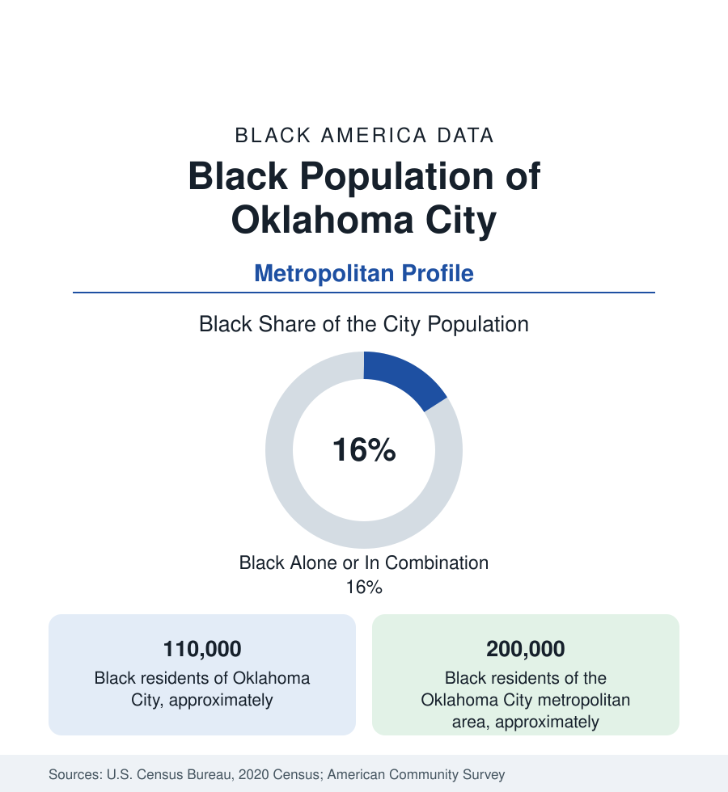

Black Cities
Black Oklahoma City: Deep Deuce's Heirs and the Northeast Side
Oklahoma City holds about 110,000 Black residents in the city and 200,000 across the metro — from jazz-age Deep Deuce to Langston's orbit. The census profile.

Oklahoma City holds about 110,000 Black residents within the city — Black alone or in combination, roughly a sixth of its 681,000 people — and about 200,000 across the metropolitan area. Oklahoma's Black geography is distinctive in American data: a state with a substantial Black frontier history (the all-Black towns, more than fifty of them, founded in the territory era — the most of any state), a jazz-age district called Deep Deuce, and an HBCU up the road at Langston. The metro profile runs from the frontier towns to the northeast side's present.
Deep Deuce and the Northeast Side
Black Oklahoma City's historic center was Deep Deuce — the Second Street district east of downtown, whose clubs of the 1930s–50s (Charlie Christian grew up here and learned guitar in its orbit; Ralph Ellison, the city's most famous literary son, was raised in the district) made it a Southwest jazz landmark — diminished by the clearance era to a few preserved blocks now revived as a heritage-and-nightlife district inside a booming downtown. The residential community consolidated northeast: the districts along NE 23rd Street and Martin Luther King Avenue (the corridor's commercial spine), the John F. Kennedy and Edwards neighborhoods, and the Garden Oaks and Wildwood layers of the postwar northeast — a broad quadrant holding the majority of Black OKC, its churches, Douglass High School (the historic Black school, still the district's flagship), and the metro's Black political base. The suburban ring (Midwest City — built for Tinker Air Force Base, a substantial Black military-adjacent community; Del City; Spencer and Forest Park, the latter among the surviving incorporated Black towns now functioning as suburbs; Edmond's growing professional increment; Norman's university-town community around OU) distributes the rest.
Tinker, the Capitol, and the Energy Cycle
The employment structure is a frontier-capital blend: Tinker Air Force Base (the state's largest single-site employer, an air logistics center whose civilian workforce anchors the eastern suburbs' Black middle class), state government, the health systems, the energy sector's headquarters cycle (the city's booms and busts written into the employment series), and the logistics economy of the I-35/I-40 crossroads. The indicators sit mid-pack nationally with the state's own signature: Black median income below the Southwest's big Texas metros, homeownership rooted in the northeast subdivisions, poverty concentrated in the older northeast tracts. Langston University — Oklahoma's only HBCU, founded 1897 in one of the all-Black towns, enrolling in the range of two thousand with an Oklahoma City campus in the northeast district — and the University of Central Oklahoma supply the higher-education layer, with Langston's existence tying the metro to the Black-town geography (Boley, the most famous of them, holds its rodeo and its data an hour east) that makes Oklahoma's Black history unlike any other state's.
The Black Towns' Long Shadow
The all-Black towns deserve the profile's own paragraph because they are Oklahoma's unique contribution to the national data: more than fifty incorporated Black towns and settlements founded between the 1860s and 1920s (Boley, Langston, Taft, Vernon among the thirteen surviving), promoted by Black townsite companies advertising in Southern Black newspapers — a frontier self-determination movement with no parallel elsewhere, whose remnants appear in the census as tiny majority-Black municipalities across the state's eastern half. Their decline (the Depression, the boll weevil, the oil economy's bypass) and their modern heritage revival (Boley's rodeo draws thousands; the towns' preservation movement is organized statewide) form a data thread the state profile shares — and the metro's Black families carry town roots the way other regions' carry plantation-county roots.
Change and the Estimates
The metro is among the faster-growing in the interior West — the MAPS-era downtown boom and energy-tech diversification — and its Black population grows with it, fastest in Midwest City, the northeast suburbs, and Edmond. The northeast side's investment file (the corridor's grocery and retail gaps, the Innovation District anchored on the OU health campus at its southern edge) is the city's standing equity project, with the tract data to grade it. The estimates' youth layer (the Douglass and northeast feeder schools' enrollments) suggests the community's center holds even as its suburbs spread.
Reading the Oklahoma City Numbers
Oklahoma City is the frontier profile: a Black community descended not only from the enslaved and the migrants but from town-founders who bought land and incorporated governments on the prairie. Deep Deuce's jazz and Boley's rodeo are the same story in two registers — self-making — and the northeast side's 200,000-person metro community is its current draft.
More in Black Cities
Black Atlanta: Population, Distribution, and Growth of a Black Metropolis
Metro Atlanta holds more than two million Black residents — roughly one in three, second only to New York. The suburban distribution, migration history, and composition of Black Atlanta in the census data.
Black New York: The Largest Black Population in America
The New York metropolitan area holds about 3.4 million Black residents — more than any metro in the nation — and the city itself about two million. The census profile.
Black Washington: The District and the Metro
The Washington metro holds about 1.6 million Black residents, and the District itself — long a majority-Black city — now records a Black share near 41 percent. The census profile.
Source: U.S. Census Bureau, 2020 Census; American Community Survey; Population Estimates Program.